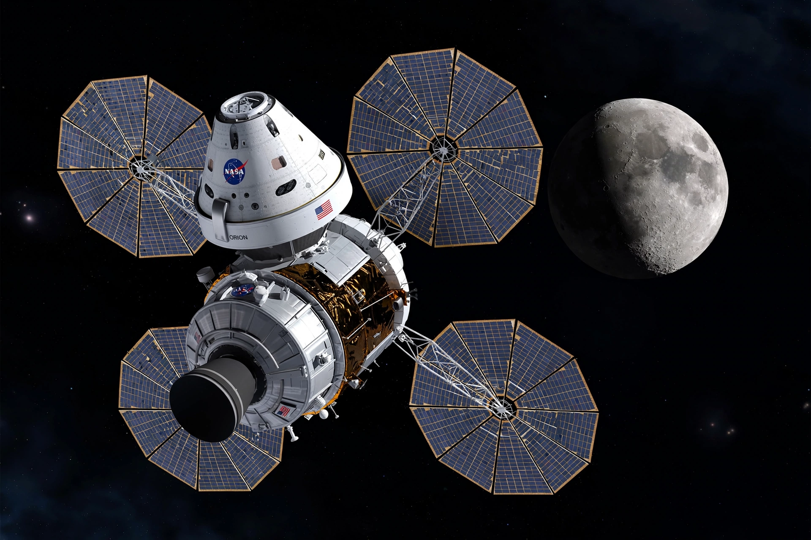

Orion (spacecraft)
From Wikipedia, the free encyclopedia
| Orion (spacecraft) | |
|---|---|
| Manufacturer | Lockheed Martin |
| Operator | NASA / ESA (service module) |
| Crew | 4 |
| First flight | 5 December 2014 (EFT-1) |
| Launch vehicle | Space Launch System |

Orion and its service module in flight (artist's concept).Orion is a partially reusable crewed spacecraft developed by NASA and built by Lockheed Martin, with a service module provided by the European Space Agency and built by Airbus. It is designed to carry four astronauts beyond low Earth orbit — to the Moon and, in long-term plans, toward Mars — and is the crew vehicle of the Artemis program.
Orion consists of a gumdrop-shaped crew module, 5 metres in diameter, mated to a cylindrical service module carrying propulsion, power and life-support consumables. It is the first American crewed deep-space vehicle since Apollo, whose capsule design it consciously echoes at larger scale.
Flights
An uncrewed test flight, Exploration Flight Test-1, flew in December 2014 aboard a Delta IV Heavy. The first integrated flight with the SLS, Artemis I, launched uncrewed on 16 November 2022, travelled around the Moon — including a distant retrograde orbit — and splashed down in the Pacific after 25 days, testing the heat shield at lunar-return speed.
Artemis II will carry four astronauts on a free-return loop around the Moon, the first crewed voyage beyond low Earth orbit since Apollo 17 in 1972. Subsequent missions are planned to dock with the Gateway station or a lunar lander.
Heat shield
Orion's 5-metre heat shield is the largest of its kind ever flown, protecting the capsule at reentry speeds near 40,000 km/h. After Artemis I, engineers found more charring and material loss than expected, which prompted a long investigation before committing a crew to the same design.
See also
Space Launch System · Artemis program · Apollo program · Lunar Gateway · Crew Dragon